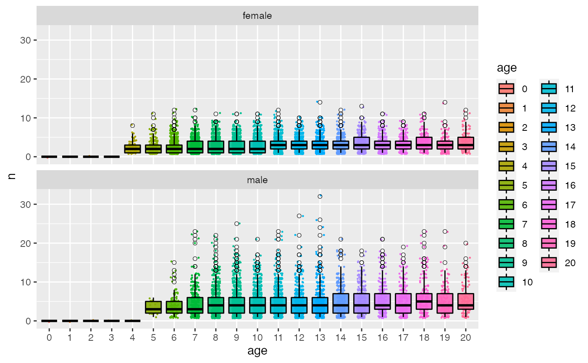
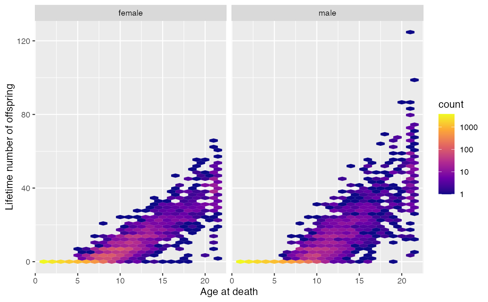
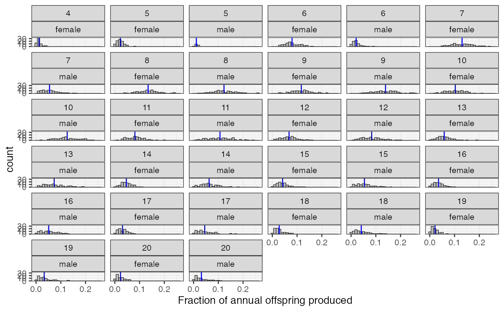

summarize_offspring_and_mate_numbers.RdMore later
summarize_offspring_and_mate_numbers( census_postkill, pedigree, deaths, lifetime_hexbin_width = c(1, 1), contrib_bin_width = 0.01 )
| census_postkill | a tibble with the postkill numbers of individuals. This is here so we know the total number of individuals that could have reproduced in a given year. |
|---|---|
| pedigree | a tibble with columns of |
| deaths | a tibble with columns of |
| lifetime_hexbin_width | a vector of length two. The first element is the width in the
age direction of each hexbin and the second is the width in the lifetime number of offspring
direction for the |
| contrib_bin_width | width of bins of histogram of contribution of parents of each age and sex to the offspring. |
# get stored slurped output for an example X <- species_1_slurped_results g <- summarize_offspring_and_mate_numbers( X$census_postkill, X$pedigree, X$deaths ) # Now g is a list holding three plots g$plot_age_specific_number_of_offspringg$plot_lifetime_output_vs_age_at_deathg$plot_fraction_of_offspring_from_each_age_class